1960s – 1980s
The Modern Masters
New Waves break the rules in Paris, Rome and beyond, while New Hollywood hands control to directors. Cinema turns personal, political and formally daring.
Famous Directors · 243


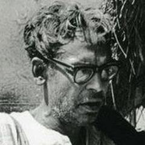


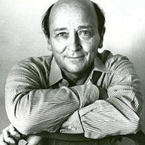


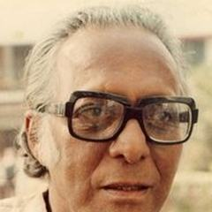


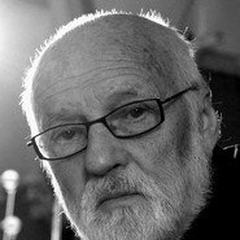


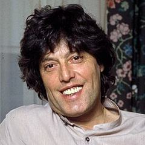


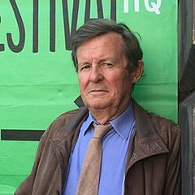
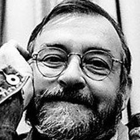


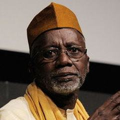


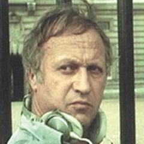


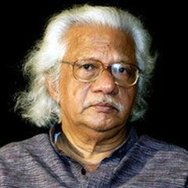

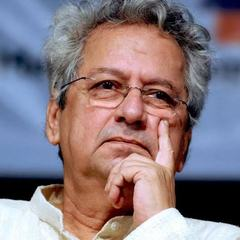
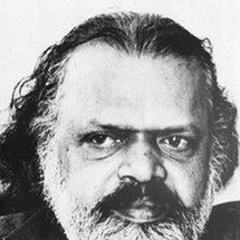


Top films
- The Godfather 1972 · Francis Ford Coppola · IMDb 9.2
- The Godfather Part II 1974 · Francis Ford Coppola · IMDb 9.0
- The Good, the Bad and the Ugly 1966 · Sergio Leone · IMDb 8.8
- Shoah 1985 · Claude Lanzmann · IMDb 8.7
- Star Wars 1977 · George Lucas · IMDb 8.6
- One Flew Over the Cuckoo's Nest 1975 · Miloš Forman · IMDb 8.6
- Once Upon a Time in the West 1968 · Sergio Leone · IMDb 8.5
- Heimat: A Chronicle of Germany 1984 · Edgar Reitz · IMDb 8.5
- Cinema Paradiso 1988 · Giuseppe Tornatore · IMDb 8.5
- Grave of the Fireflies 1988 · Isao Takahata · IMDb 8.5
- The Shining 1980 · Stanley Kubrick · IMDb 8.4
- Apocalypse Now 1979 · Francis Ford Coppola · IMDb 8.4
- Raiders of the Lost Ark 1981 · Steven Spielberg · IMDb 8.4
- Woman in the Dunes 1964 · Hiroshi Teshigahara · IMDb 8.4
- Alien 1979 · Ridley Scott · IMDb 8.4
- Amadeus 1984 · Miloš Forman · IMDb 8.4
- 2001: A Space Odyssey 1968 · Stanley Kubrick · IMDb 8.3
- Once Upon a Time in America 1984 · Sergio Leone · IMDb 8.3
- Scarface (1983) 1983 · Brian De Palma · IMDb 8.3
- Come and See 1985 · Elem Klimov · IMDb 8.3
- Death of Yazdgerd 1982 · Bahram Beyzaie · IMDb 8.3
- Me, Grandma, Iliko and Ilarion 1962 · Tengiz Abuladze · IMDb 8.3
- The Battle of Chile 1979 · Patricio Guzmán · IMDb 8.3
- A Clockwork Orange 1971 · Stanley Kubrick · IMDb 8.2
- Full Metal Jacket 1987 · Stanley Kubrick · IMDb 8.2
- For a Few Dollars More 1965 · Sergio Leone · IMDb 8.2
- Il Sorpasso 1962 · Dino Risi · IMDb 8.2
- The Ascent 1977 · Larisa Shepitko · IMDb 8.2
- Taxi Driver 1976 · Martin Scorsese · IMDb 8.2
- La Jetée 1962 · Chris Marker · IMDb 8.2
- The Thing 1982 · John Carpenter · IMDb 8.2
- The Sting 1973 · George Roy Hill · IMDb 8.2
- Welfare 1975 · Frederick Wiseman · IMDb 8.2
- Barry Lyndon 1975 · Stanley Kubrick · IMDb 8.1
- A Special Day 1977 · Ettore Scola · IMDb 8.1
- The Exorcist 1973 · William Friedkin · IMDb 8.1
- The Miracle Worker 1962 · Arthur Penn · IMDb 8.1
- Raging Bull 1980 · Martin Scorsese · IMDb 8.1
- Army of Shadows 1969 · Jean-Pierre Melville · IMDb 8.1
- Jaws 1975 · Steven Spielberg · IMDb 8.1
- Chinatown 1974 · Roman Polanski · IMDb 8.1
- Paris, Texas 1984 · Wim Wenders · IMDb 8.1
- Paper Moon 1973 · Peter Bogdanovich · IMDb 8.1
- The Deer Hunter 1978 · Michael Cimino · IMDb 8.1
- Blade Runner 1982 · Ridley Scott · IMDb 8.1
- The Battle of Algiers 1966 · Gillo Pontecorvo · IMDb 8.1
- Dimensions of Dialogue 1982 · Jan Švankmajer · IMDb 8.1
- Z 1969 · Costa-Gavras · IMDb 8.1
- Dead Poets Society 1989 · Peter Weir · IMDb 8.1
- The Holy Innocents 1984 · Mario Camus · IMDb 8.1
- Petria's Wreath 1980 · Srđan Karanović · IMDb 8.1
- A Woman Under the Influence 1974 · John Cassavetes · IMDb 8.0
- We All Loved Each Other So Much 1974 · Ettore Scola · IMDb 8.0
- Au revoir les enfants 1987 · Louis Malle · IMDb 8.0
- A Difficult Life 1961 · Dino Risi · IMDb 8.0
- Le Samouraï 1967 · Jean-Pierre Melville · IMDb 8.0
- Stalker 1979 · Andrei Tarkovsky · IMDb 8.0
- Ivan's Childhood 1962 · Andrei Tarkovsky · IMDb 8.0
- Andrei Rublev 1966 · Andrei Tarkovsky · IMDb 8.0
- Rosemary's Baby 1968 · Roman Polanski · IMDb 8.0
- The Last Picture Show 1971 · Peter Bogdanovich · IMDb 8.0
- Investigation of a Citizen Above Suspicion 1970 · Elio Petri · IMDb 8.0
- The Emigrants 1971 · Jan Troell · IMDb 8.0
- The New Land 1972 · Jan Troell · IMDb 8.0
- Platoon 1986 · Oliver Stone · IMDb 8.0
- Gandhi 1982 · Richard Attenborough · IMDb 8.0
- The Graduate 1967 · Mike Nichols · IMDb 8.0
- Who's Afraid of Virginia Woolf? 1966 · Mike Nichols · IMDb 8.0
- Rain Man 1988 · Barry Levinson · IMDb 8.0
- Butch Cassidy and the Sundance Kid 1969 · George Roy Hill · IMDb 8.0
- Repentance 1984 · Tengiz Abuladze · IMDb 8.0
- The Wishing Tree 1977 · Tengiz Abuladze · IMDb 8.0
- The Naked Island 1960 · Kaneto Shindo · IMDb 8.0
- Akira 1988 · Katsuhiro Otomo · IMDb 8.0
- Spartacus 1960 · Stanley Kubrick · IMDb 7.9
- A Fistful of Dollars 1964 · Sergio Leone · IMDb 7.9
- La Notte 1961 · Michelangelo Antonioni · IMDb 7.9
- Second Wind 1966 · Jean-Pierre Melville · IMDb 7.9
- Le Cercle rouge 1970 · Jean-Pierre Melville · IMDb 7.9
- E.T. the Extra-Terrestrial 1982 · Steven Spielberg · IMDb 7.9
- Kes 1969 · Ken Loach · IMDb 7.9
- Solaris 1972 · Andrei Tarkovsky · IMDb 7.9
- Mirror 1975 · Andrei Tarkovsky · IMDb 7.9
- Nostalghia 1983 · Andrei Tarkovsky · IMDb 7.9
- Land of Silence and Darkness 1971 · Werner Herzog · IMDb 7.9
- Fitzcarraldo 1982 · Werner Herzog · IMDb 7.9
- The Conformist 1970 · Bernardo Bertolucci · IMDb 7.9
- Wings of Desire 1987 · Wim Wenders · IMDb 7.9
- Being There 1979 · Hal Ashby · IMDb 7.9
- Cría cuervos 1976 · Carlos Saura · IMDb 7.9
- The Wild Bunch 1969 · Sam Peckinpah · IMDb 7.9
- Il posto 1961 · Ermanno Olmi · IMDb 7.9
- Bashu, the Little Stranger 1989 · Bahram Beyzaie · IMDb 7.9
- Annie Hall 1977 · Woody Allen · IMDb 7.9
- All the President's Men 1976 · Alan J. Pakula · IMDb 7.9
- Hospital 1970 · Frederick Wiseman · IMDb 7.9
- Siberiade 1979 · Andrei Konchalovsky · IMDb 7.9
- Tampopo 1985 · Juzo Itami · IMDb 7.9
- Pixote 1981 · Héctor Babenco · IMDb 7.9
- Playtime 1967 · Jacques Tati · IMDb 7.8